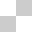

일러스트: 조남호
일러스트: 조남호
http://namojo.tistory.com/
더 좋은 도구를 선택한 사용자에게는 더 향상된 경험을.
이것은 좋은 도구(브라우저)를 선택하지 않은 사용자를 차별하는 것이 아니며 그래서도 안된다.
중요한 것은 '경험의 질'을 높이는 것이지 어떤 사용자를 '포기'하자는 것이 아니다.


정찬명
일러스트: 조남호
http://namojo.tistory.com/
모든 브라우저들이 CSS3를 완벽하게 지원하고
IE 6, 7, 8이 사라질때 까지?
오, 마이 갓!
CSS의 창시자 호콘비움리와 함께. 2010년 5월 6일.
이것은 좋은 도구(브라우저)를 선택하지 않은 사용자를 차별하는 것이 아니며 그래서도 안된다.
중요한 것은 '경험의 질'을 높이는 것이지 어떤 사용자를 '포기'하자는 것이 아니다.

구슬이 서말이라도 꿰어야 보배.

새로운 표준의 모든것을 알 필요는 없다.

아니오. 결벽증 환자를 위한 컴퓨팅 환경.

아직 모든 브라우저들이 CSS3를 완벽하게 잘 지원하는 것은 아니지만 좋은 도구를 선택한 사용자들은 여러분의 센스에 분명히 감탄할껍니다.
text-shadow
text-shadow
지원 브라우저 :
text-shadow:5px 5px 0 #ccc;
filter:progid:DXImageTransform.Microsoft.dropshadow(OffX=5, OffY=5, Color=#cccccc, Positive=true);
display:inline-block; zoom:1;
IE 브라우저를 제외한 모든 브라우저가 이미 text-shadow 속성을 지원하고 있다. blur 값은 생략할 수 있는데 생략하는 경우 기본값은 blur 스타일이 전혀 지정되지 않은 '0'이다. IE는 DropShadow Filter를 사용할 수 있지만 그림자의 blur 값이 '0'과 같은 표현으로 처리되고 blur 값을 지정할 수 없는 단점이 있다. IE 브라우저 버전간 호환을 위해 display 속성을 block 또는 inline-block 으로 지정하고 zoom:1 속성을 추가로 부여해야 한다.
CSS Text Level 3 › text-shadow - http://www.w3.org/TR/css3-text/#text-shadow
MSDN › DropShadow Filter - http://msdn.microsoft.com/en-us/library/ms532985(VS.85).aspx
무궁화 꽃이 피었습니다.
지원 브라우저 :
text-overflow:ellipsis;
-o-text-overflow:ellipsis;
Firefox 브라우저는 아직 지원하지 않고 있지만 IE는 이미 IE6 버전부터 지원하고 있다. Firefox 브라우저는 overflow-hidden 속성에 의하여 넘치는 부분이 말 줄임표 없이 잘린다.
CSS Text Level 3 › text-overflow - http://dev.w3.org/csswg/css3-text/#text-overflow
http://abcdefghijklmnopqrstuvwxyzabcdefghijklmnopqrstuvwxyzabcdefghijklmnopqrstuvwxyz.com
http://abcdefghijklmnopqrstuvwxyzabcdefghijklmnopqrstuvwxyzabcdefghijklmnopqrstuvwxyz.com
1byte 문자열이 공백 없이 등장하는 경우 모든 브라우저들은 이를 하나의 단어로 해석하기 때문에 개행하지 않는다. 이것을 강제로 개행할 수 있다.
지원 브라우저 :
word-wrap:break-word;
모든 브라우저가 이 속성을 지원한다.
CSS Text Level 3 › word-wrap - http://www.w3.org/TR/css3-text/#word-wrap

The quick brown fox jumps over the lazy dog.
이 문서의 기본 글꼴은 나눔고딕 입니다.
0123456789
지원 브라우저 :
@font-face{ font-family:ngttf; src:url(NanumGothic.ttf);}
@font-face{ font-family:ngeot; src:url(NanumGothic.eot);}
body, input, textarea, select, button{
font-family:NanumGothic, 나눔고딕, ngttf, ngeot;
}
ttf 파일과 eot 파일을 함께 준비한다. 비 IE 브라우저는 ttf 포멧과 otf 포멧을 지원하지만 eot 포멧을 지원하지 않는다. 반면 IE 브라우저는 eot 포멧만 지원하기 때문에 두 가지 포멧이 모두 필요하다. 나눔고딕 글꼴을 이미 설치한 사용자는 웹 폰트를 내려받지 않고 로컬 글꼴을 사용할 수 있도록 NanumGothic을 먼저 선언한다. 한국어 글꼴인 경우 오페라 브라우저는 font-family 이름에 반드시 한글을 사용해야 한다. 나눔고딕 글꼴 내려받기 NanumGothic.ttf | NanumGothic.eot
CSS Fonts Module Level 3 › @font-face - http://www.w3.org/TR/css3-fonts/#the-font-face-rule
지원 브라우저 :
opacity:0.5;
filter:alpha(opacity=50);
IE 브라우저를 제외한 모든 브라우저가 이미 opacity 속성을 지원하고 있다. IE는 MS전용 Alpha Filter를 적용하여 동일한 표현이 가능하다.
CSS Color Module Level 3 › opacity - http://www.w3.org/TR/css3-color/#transparency
MSDN › Alpha Filter - http://msdn.microsoft.com/en-us/library/ms532967(VS.85).aspx
지원 브라우저 :
box-shadow:10px 10px 10px silver;
-moz-box-shadow:10px 10px 10px silver;
-webkit-box-shadow:10px 10px 10px silver;
filter:progid:DXImageTransform.Microsoft.Shadow(color=silver,direction=135, strength=20);
값은 'X좌표, Y좌표, blur값, 그림자색' 순으로 선언한다. blur 값은 생략할 수 있는데 생략하는 경우 기본값은 blur 스타일이 전혀 지정되지 않은 '0'이다. IE 브라우저는 Shadow Filter를 적용할 수 있으나 그림자를 한 방향으로만 표현할 수 있고 사방으로 표현할 수 없는 제약이 따른다. inset 값을 추가하면 그림자가 상자 안쪽으로 발생하는데 IE filter 로는 이런 표현이 불가능하다. Safari4는 inset 값을 지원하지 않지만 Safari5는 지원한다.
CSS Backgrounds and Borders Module Level 3 › box-shadow - http://www.w3.org/TR/css3-background/#the-box-shadow
MSDN › Shadow Filter - http://msdn.microsoft.com/en-us/library/ms533086(v=VS.85).aspx
지원 브라우저 :
border-radius:30px;
-moz-border-radius:30px;
-webkit-border-radius:30px;
네 방향 모두 적용하는 경우.
CSS Backgrounds and Borders Module Level 3 › border-radius - http://www.w3.org/TR/css3-background/#the-border-radius
border-radius:30px 0;
-moz-border-radius:30px 0;
-webkit-border-top-left-radius:30px;
-webkit-border-bottom-right-radius:30px;
원하는 방향에만 적용하는 경우. 웹킷 브라우저 가운데 사파리4가 단축 속성을 지원하지 않아 현재로써는 단축 속성을 사용할 수 없다.
CSS Backgrounds and Borders Module Level 3 › border-radius - http://www.w3.org/TR/css3-background/#the-border-radius
하나의 요소에  이런 배경 이미지가 4번 적용되었다.
지원 브라우저 :
background:
url(bg.gif) no-repeat left top,
url(bg.gif) no-repeat right top,
url(bg.gif) no-repeat left bottom,
url(bg.gif) no-repeat right bottom;
속성의 값을 쉼표(,)로 분리하면 배경 이미지의 사용 횟수를 무한대로 늘릴 수 있다.
CSS Backgrounds and Borders Module Level 3 › background - http://www.w3.org/TR/css3-background/#background
지원 브라우저 :
background:#3EAF0E -webkit-gradient(linear, 0% 0%, 0% 100%, from(#3EAF0E), to(#fff));
background:#3EAF0E -moz-linear-gradient(top, #3EAF0E, #fff);
filter:progid:DXImageTransform.Microsoft.gradient(startColorStr=#3EAF0E, endColorStr=#ffffff);
웹킷(크롬, 사파리)과 파이어폭스 및 IE의 속성 및 값 선언 방식이 모두 다름에 유의한다. 웹킷은 (타입, X시작점 Y시작점, X종료점 Y종료점, 시작색, 종료색) 형식으로 선언하고 파이어폭스는 (시작점, 시작색, 종료색) 순으로 선언한다. gradients를 지원하지 않는 브라우저를 위하여 기본 배경색을 지정해두어야 함에 유의한다. IE는 IE 전용 Gradient Filter를 사용한다.
Safari CSS Visual Effects Guide › gradients - http://developer.apple.com/safari/library/documentation/InternetWeb/Conceptual/SafariVisualEffectsProgGuide/Gradients/Gradients.html
Mozila Developer Center › -moz-linear-gradient - https://developer.mozilla.org/en/CSS/-moz-linear-gradient
MSDN › Gradient Filter - http://msdn.microsoft.com/en-us/library/ms532997(v=VS.85).aspx
Sold Out
iPhone 4
지원 브라우저 :
-o-transform:rotate(90deg);
-o-transform-origin:0 100%;
-moz-transform:rotate(90deg);
-moz-transform-origin:0 100%;
-webkit-transform:rotate(90deg);
-webkit-transform-origin:0 100%;
filter:progid:DXImageTransform.Microsoft.Matrix(M11=6.123031769111886e-17, M12=-1, M21=1, M22=6.123031769111886e-17, sizingmethod='auto expand');
시계 방향으로 90도 회전시키는 코드. translate(이동), scale(크기), rotate(회전), skew(비틀기)가 가능하다. transform-oriain 속성은 transform의 축을 지정하는 속성으로써 값은 기본 값이 50%(X축) 50%(Y축) 이기 때문에 기본 값을 따르는 경우 생략할 수 있다. IE의 경우 Matrix Filter를 사용할 수 있으나 사용법이 다소 복잡하다.
CSS 2D Transforms Module Level 3 › transform - http://www.w3.org/TR/css3-2d-transforms/#transform-property
MSDN › Matrix Filter - http://msdn.microsoft.com/en-us/library/ms533014(v=VS.85).aspx
지원 브라우저 :
a{padding:10px 15px; margin:0;
-o-transition:0.2s;
-webkit-transition:0.2s;
-moz-transition:.2s;}
a:hover{padding:15px 20px;
margin:-6px;
opacity:0.8;}
transition 속성의 값으로는 어떤 속성을 몇 초간 진행할 것인지 정의한다. 어떤 속성을 transition 할 것인지 지정하지 않으면 기본 값 all이 지정되어 모든 속성을 transition 시킨다. 파이어폭스 브라우저는 3.7 버전부터 지원을 기대할 수 있다.
CSS Transitions Module Level 3 › transition - http://www.w3.org/TR/css3-transitions/#the-transition-shorthand-property-
지원 브라우저 :
.ani{-webkit-animation:webkitFire infinite 1s linear;}
@-webkit-keyframes 'webkitFire'{
from{ -webkit-transform:rotate(0deg);}
to{-webkit-transform:rotate(360deg);}
}
'webkitFire'라는 사용자 정의 에니메이션이 실행 된다. 일정한(linear) 속도로 1초(1s)에 한 바퀴(0~360deg)씩 영원히(infinite) 돌게 된다.
CSS Animations Module Level 3 › animation - http://www.w3.org/TR/css3-animations/#the-animation-shorthand-property-


이 프리젠테이션은 HTML5와 CSS3를 사용하여 제작했습니다.